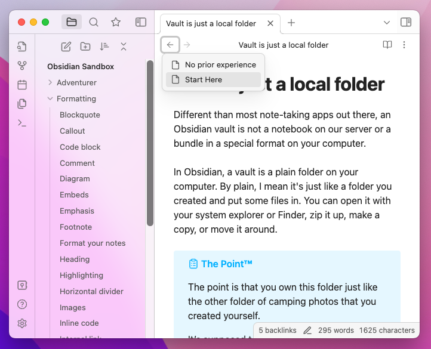
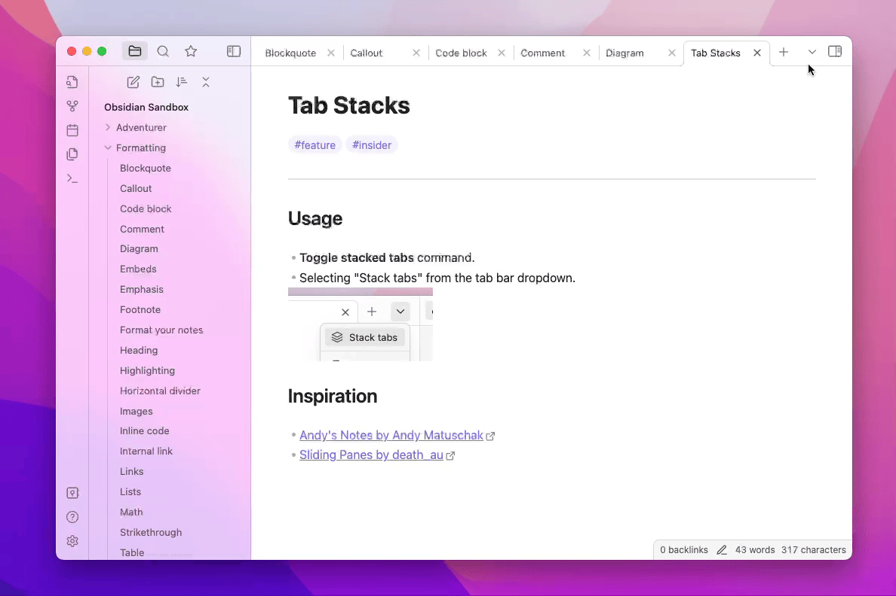

Ctrl/Command-clicking on a filename label will open that file in a new tab.Shift-enter inside the file select modal in canvas will now create a file based on your current input (same as the quick switcher behavior).See v1.1.1 in the Developer CHANGELOG.
Ctrl/Command + Shift + W).Shift + Enter in the editor Find Dialog will find the previous instance.Home behavior in task lists..trash) will no longer add a trailing .Ctrl + Shift + →.fundingUrl in the plugin manifest. The donation URL will be shown in the plugin gallery entry.gj on the last line jumps up.gj and gk not working.obsidian://vault not properly marking other vaults as closed.webm embeds are now properly recognized as video instead of audio.We've made some big changes both visually and under the hood for this release. If you rely on any third party plugins or themes, we highly encourage you to check for updates before delving into Obsidian 1.0.
This update includes significant changes to the look and feel of Obsidian. Some of the highlights include:
Make sure to take a look at the FAQ section which should address some common points of confusion as you adapt to the new Obsidian.
With this update, we have embraced tabs throughout the UI. We've found that tabs provide a more intuitive experience for both browsing and editing notes in your vault.
Tabs have had us rethinking some of the most basic interactions with Obsidian. We have taken this opportunity to consolidate the hotkeys for opening files. Combine these modifier keys when clicking on any link in Obsidian (this includes the quick switcher!) or use them with Enter to navigate the link under the cursor.
| Action | MacOS | Windows/Linux |
|---|---|---|
| Navigate | None | None |
| New Tab | ⌘ (+ Shift in Source Mode) | Ctrl (+ Shift in Source Mode) |
| New Tab Group | ⌘⌥ | CtrlAlt |
| New Window | ⌘⌥Shift | CtrlAltShift |
Tabs have also inspired some changes to how users browse their vaults. It felt only natural that we also introduce per-tab history. Each tab now maintains its own history for navigation.

You can now switch any tab group in your workspace into a tab stack. Tab stacks provide an alternative way to view your tabs, reminiscent of Andy's Mode.

Tab stacks are, at their heart, the same as a tab group. Try mixing and matching with a tab group on one side and a tab stack on the other.
We've introduced quite a few new settings at Settings → Appearance.
| Setting | Description |
|---|---|
| Show inline title | Notes now display the full note title inline with the note contents as an Inline Title. You can disable this in settings |
| Show tab title bar | Show or hide the title bar at the top of very tab. |
| Window frame style | By default, the UI is now in Frameless mode. The window title is hidden. In settings, you can choose between the new frameless mode, the custom Obsidian frame (old default), and using the native OS window frame. |
| Accent color | There's now an "accent color" color-picker to give your vault its own unique style. Theme support may vary. |
| Zoom level | Controls the overall zoom level of the app. |
| Native menus | Menus will be rendered to match the context menus provided by the operating system. Enabled by default on MacOS. |
Shift + Up/Down hotkeys to expand search results while a search item is focused.Home will now move the cursor to the beginning of a list item.Ctrl/Cmd+W can now close the vault switcher and help window.md files.show-theme action to the Obsidian URI. It will open the given theme in the Community theme gallery. For example: obsidian://show-theme?name=Minimal.obsidian/workspace file. It is now saved to workspace.json.has-active-menu class to file explorer item that received the right-click.list-bullet class to HTML markup for unordered list items.Q. Why am I seeing the title of my note duplicated at the top of my note?
We now display the filename as an Inline Title to allow filenames to feel more attached to the note. If you already have the heading of your note matching the filename, you might notice some redundancy. You can disable this feature via Appearance → Show inline title.
Q. Why does everything look so big/small?
The new update has made some changes to make Obsidian feel more native to your operating system. To adjust the overall scale of the UI, you can configure the UI Zoom level in Settings at Appearance → Advanced → Zoom level.
Q. How do I open notes side-by-side now?
The behavior of
Cmd/Ctrl + EnterandCmd/Ctrl + Clickhave changed to opening links in a new tab. To open links in a new pane to the right, you can useCmd/Ctrl + Alt + EnterorCmd/Ctrl + Alt + Click.
Q. Why can't I toggle checkboxes with CtrlEnter (or ⌘Enter on MacOS) anymore?
The default hotkey for "Toggle checkbox status" has been changed to CtrlL (or ⌘L on MacOS). CtrlEnter is now the default hotkey for opening links under the cursor in a new tab. You can change these hotkeys in settings.
Major changes have been made to Obsidian's styling. If you are using a custom theme, make sure you update the theme to the latest version. If you are still seeing visual anomalies, we recommend switching to the default theme for the time being.
Ctrl/Cmd + Click on a link will open it in a new tabCtrl/Cmd + Alt + Click will open links in a new pane to the right.Ctrl/Cmd + Alt + Shift + Click will open links in a new window.Shift + Up/Down hotkeys to expand search results while a search item is focused.Home will now move the cursor to the beginning of a list item.show-theme action to the Obsidian URI. It will open the given theme in the Community theme gallery. For example: obsidian://show-theme?name=MinimalCtrl/Cmd+W can now close the vault switcher and help window.md files..obsidian/workspace file. It is now saved to workspace.json.has-active-menu class to file explorer item that received the right-click.list-bullet class to HTML markup for unordered list items.Q. Why am I seeing the title of my note duplicated at the top of my note?
We now display the filename as an Inline Title to allow filenames to feel more attached to the note. If you already have the heading of your note matching the filename, you might notice some redundancy. You can disable this feature from Editor → Display → Show inline title.
Q. Where did the view header with my current view status go?
The view header is hidden by default. You can re-enable it in settings at Appearance → Advanced → Show tab title bar.
Q. Why does everything look so big/small?
The new update has made some changes to make Obsidian feel more native to your operating system. To adjust the overall scale of the UI, you can configure the UI Zoom level in Settings at Appearance → Advanced → Zoom level.
Q. How do I open notes side-by-side now?
The behavior of
Cmd/Ctrl + EnterandCmd/Ctrl + Clickhave changed to opening links in a new tab. To open links in a new pane to the right, you can useCmd/Ctrl + Alt + EnterorCmd/Ctrl + Alt + Click.
A huge thank you to @pjeby for Pane Relief and for all his help with testing the new per-tab history!
Ctrl/Cmd+Alt+Shift+Enter)Fixed copying and pasting using the context menu.